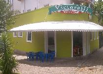
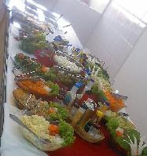
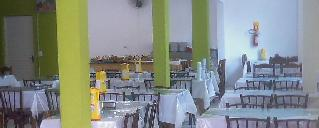

|

Nosso restaurante fica a 5 minutos do centro de Curitiba, no
Alto da Glória, bairro que foi fundado pelo
Barão de Holleben, por volta de 1856. Seus primeiros moradores,
pertencentes à família Leão, construíram a Capelinha de Nossa
Senhora da Glória, que deu origem ao nome do bairro, e o primeiro
teatro da cidade. Os padres redentoristas ganharam, da família Leão,
esse santuário, e substituíram a imagem da padroeira da região pela
de Nossa Senhora do Perpétuo Socorro.
Hoje, no bairro temos o
Estádio Couto Pereira (sede do
Coritiba Foot Ball Club).  No Almoço você pode saborear mais de 15 tipos de saladas, com variados temperos e cremes, azeitonas, ovos de codorna, queijo entre outros. Os pratos quentes são formados por carnes, aves, peixes, massas feitas na casa (Lasanha, Rondelli, Canelones, Capelletti, Nhoque, Espaghetti...) além do arroz e feijão com delicioso tempero caseiro e outros pratos especiais do chefe. Temos também Buffet de Sobremesa com o saboroso pudim de leite.  O restaurante "Victorelli" é um lugar aconchegante com fácil acesso e estacionamento. Venha experimentar, Nossa meta é satisfazer nossos clientes. |
|
Rua Mauá, 456 - Alto da Glória - CEP: 80030-200 - Curitiba - PR - Fone: (41) 3016-0009
|